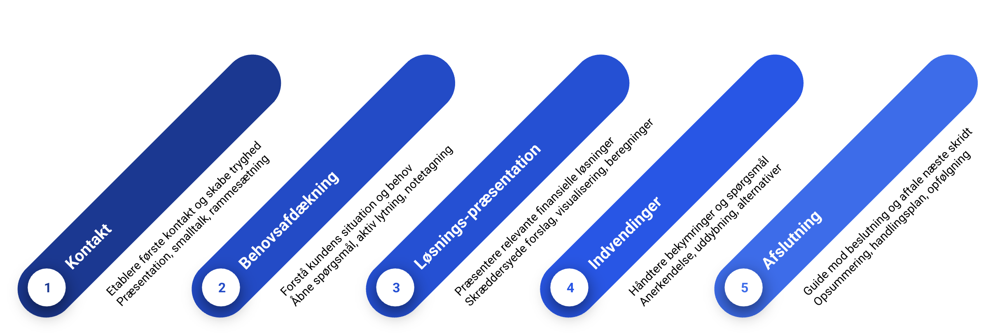

Klassisk Salg i Finanssektoren

Klassisk salg er fundamentet for al finansiel rådgivning. Denne tilgang fokuserer på at opbygge langvarige kunderelationer gennem tillid, grundig behovsafdækning og skræddersyede løsninger.
I dette kapitel ser vi på:
- De fem faser i klassisk salg
- Særlige hensyn i finansiel rådgivning
- Praktiske værktøjer og teknikker
- Cases fra forskellige finansielle områder
Podcast om klassisk salg i finanssektoren
Podcast om klassisk salg i finanssektorenDe Fem Faser i Klassisk Salg
Klassisk salg følger en velafprøvet struktur med fem faser, der er særligt effektive i finansiel rådgivning. Rødderne til denne struktur kan spores tilbage til tidlige salgsmodeller som AIDA (Attention, Interest, Desire, Action), udviklet i starten af 1900-tallet, som fokuserede på at guide kunden gennem en psykologisk proces. Den klassiske model her er en videreudvikling, der lægger vægt på dialog og behov.
| Fase | Formål | Nøgleaktiviteter | Finansielle Eksempler |
|---|---|---|---|
| 1. Kontakt | Etablere første kontakt og skabe tryghed | Præsentation, smalltalk, rammesætning | Velkomst i banken, introduktion af rådgiverrolle |
| 2. Behovsafdækning | Forstå kundens situation og behov | Åbne spørgsmål, aktiv lytning, notetagning | Gennemgang af økonomi, fremtidsplaner, risikovillighed |
| 3. Løsningspræsentation | Præsentere relevante finansielle løsninger | Skræddersyede forslag, visualisering, beregninger | Investeringsforslag, lånetilbud, pensionsplaner |
| 4. Indvendinger | Håndtere bekymringer og spørgsmål | Anerkendelse, uddybning, alternativer | Risikoforklaring, omkostningsgennemgang. Generelt: Imødegåelse af tvivl om produktets egnethed eller pris. |
| 5. Afslutning | Guide mod beslutning og aftale næste skridt | Opsummering, handlingsplan, opfølgning | Underskrift på aftaler, booking af opfølgningsmøde |
Særlige Hensyn i Finansiel Rådgivning
Ved klassisk salg i finanssektoren skal du være særligt opmærksom på:
- Regulatoriske krav: Dokumentation, risikovurdering, egnethedstests
- Etiske hensyn: Kundens bedste interesse, transparens om omkostninger
- Kompleksitet: Forklaring af produkter på kundens niveau
- Langsigtet perspektiv: Fokus på langvarige relationer frem for hurtige salg
Case: Boligrådgivning i Banken
Udgangspunkt: Et par i 30'erne besøger bankrådgiver Mette med henblik på at købe deres første bolig.
Klassisk salgstilgang:
- Kontakt:
- Mette byder velkommen og skaber en afslappet atmosfære
- Kort snak om parrets boligdrømme
- Forklaring af mødets formål og forløb
- Behovsafdækning:
- "Hvilke områder kigger I på?"
- "Hvordan ser jeres økonomi ud på længere sigt?"
- "Hvad bekymrer jer mest ved boligkøbet?"
- Løsningspræsentation:
- Gennemgang af forskellige lånetyper
- Konkrete beregninger på månedlige ydelser
- Visualisering af forskellige scenarier
- Indvendinger:
- Håndtering af bekymring om variabel rente
- Forklaring af fordele/ulemper ved forskellige lånetyper
- Præsentation af kombinationsløsning for at balancere risiko
- Afslutning:
- Aftale om forhåndsgodkendelse
- Plan for det videre forløb
- Booking af opfølgningsmøde
Resultat: Parret føler sig trygge ved processen og accepterer Mettes anbefaling om en kombinationsløsning med 80% fastforrentet lån og 15% F5-lån.
Case: Investeringsrådgivning
Udgangspunkt: En kunde, Anna (45 år), har arvet 500.000 kr. og ønsker rådgivning om investering. Hun har begrænset erfaring med investering.
Klassisk salgstilgang:
- Kontakt:
- Rådgiver Peter byder velkommen, spørger ind til Annas situation (arv), og forklarer mødets formål: at finde den rette investeringsløsning for hende.
- Behovsafdækning:
- Peter spørger ind til Annas tidshorisont ("Hvornår forventer du at skulle bruge pengene?"), risikovillighed ("Hvordan har du det med udsving i værdien?"), mål ("Hvad skal pengene bruges til?"), og nuværende økonomi.
- Løsningspræsentation:
- Peter forklarer forskellige investeringsmuligheder (aktier, obligationer, investeringsforeninger) og præsenterer en diversificeret portefølje med moderat risiko, der passer til Annas profil og tidshorisont. Han viser forventet afkast og risikoscenarier.
- Indvendinger:
- Anna udtrykker bekymring for at tabe penge. Peter anerkender bekymringen, forklarer risikoen ved ikke at investere (inflation) og uddyber, hvordan diversificering mindsker risikoen.
- Afslutning:
- Peter opsummerer den foreslåede portefølje og dens fordele. De aftaler, at Anna tænker over det og vender tilbage. Peter booker et opfølgningsmøde.
Resultat: Anna føler sig informeret og tryg. Hun accepterer forslaget ved opfølgningsmødet og får startet sin investering.
Case: Pensionsrådgivning
Udgangspunkt: Lars (55 år) ønsker at gennemgå sin pensionsopsparing for at sikre en god økonomi i alderdommen.
Klassisk salgstilgang:
- Kontakt:
- Rådgiver Sarah indleder mødet, anerkender Lars' proaktive tilgang til pension, og sætter rammen for samtalen (gennemgang af nuværende ordning, ønsket for fremtiden).
- Behovsafdækning:
- Sarah spørger ind til Lars' nuværende pensionsordninger, ønsket pensionsalder, forventet levestandard som pensionist, familieforhold og eventuelle særlige ønsker (f.eks. mulighed for tidlig tilbagetrækning, begunstigelse).
- Løsningspræsentation:
- Sarah præsenterer en analyse af Lars' nuværende opsparing og viser et estimat for hans fremtidige pensionsudbetaling baseret på forskellige scenarier.
- Hun foreslår justeringer, f.eks. øget indbetaling eller ændring af investeringsprofil for at optimere afkastet frem mod pensionen, og forklarer konsekvenserne.
- Indvendinger:
- Lars er usikker på, om han kan undvære et højere beløb i månedlig indbetaling. Sarah gennemgår Lars' budget sammen med ham og viser, hvordan en lille justering nu kan have stor effekt på sigt.
- De diskuterer alternative investeringsprofiler med forskellig risiko og afkastpotentiale.
- Afslutning:
- De aftaler en konkret plan for justering af pensionsordningen (f.eks. øget indbetaling og skift til en mere balanceret investeringsprofil).
- Sarah sender et resumé og aftaler opfølgning om et år for at sikre, at planen følges og justeres ved behov.
Resultat: Lars har fået et klart overblik over sin pension og en konkret, tilpasset plan for at nå sine mål. Han føler sig tryg ved sin økonomiske fremtid.
Case: Revisionsydelser
Udgangspunkt: En mellemstor produktionsvirksomhed, 'Innovate A/S', overvejer at skifte revisor. CFO'en, Brian, kontakter et revisionsfirma.
Klassisk salgstilgang (ved Partner, Charlotte):
- Kontakt:
- Charlotte takker for henvendelsen, bekræfter modtagelsen af Brians e-mail, og foreslår et uforpligtende møde for at forstå Innovate A/S' behov bedre. Hun sender relevant informationsmateriale på forhånd.
- Behovsafdækning:
- På mødet spørger Charlotte ind til Brians grunde til at overveje et skifte ("Hvad fungerer godt/mindre godt ved jeres nuværende revisor?"), virksomhedens fremtidsplaner (ekspansion, nye markeder), specifikke udfordringer (komplekse transaktioner, international handel) og forventninger til en ny revisor (branchekendskab, proaktiv rådgivning).
- Løsningspræsentation:
- Charlotte præsenterer revisionsfirmaets tilgang, fremhæver deres erfaring med produktionsvirksomheder og internationale forhold. Hun forklarer revisionsprocessen, introducerer det potentielle team og skitserer, hvordan de kan levere merværdi udover den lovpligtige revision (f.eks. skatteoptimering, sparring om interne kontroller).
- Indvendinger:
- Brian udtrykker bekymring for omkostningerne og besværet ved et revisorskifte. Charlotte anerkender dette, præsenterer et transparent prisoverslag og forklarer, hvordan firmaet sikrer en smidig overgangsproces. Hun fremhæver den langsigtede værdi af proaktiv rådgivning.
- Afslutning:
- Charlotte opsummerer de vigtigste punkter og den foreslåede løsning. Hun sender et detaljeret tilbud efter mødet og aftaler en dato for opfølgning på Brians beslutning.
Resultat: Brian føler sig forstået og overbevist om firmaets kompetencer og værdi. Innovate A/S beslutter at skifte revisor.
Case: Salg af Erhvervsforsikring
Udgangspunkt: En nystartet IT-konsulentvirksomhed med 5 ansatte har brug for erhvervsforsikringer.
Klassisk salgstilgang (ved Forsikringsrådgiver, David):
- Kontakt:
- David kontakter virksomhedens direktør, Maria, efter at have set virksomheden omtalt i et lokalt erhvervsnetværk. Han præsenterer sig selv og sit selskab og foreslår en kort snak om virksomhedens forsikringsbehov.
- Behovsafdækning:
- David spørger ind til virksomhedens aktiviteter, antal ansatte, kontorfaciliteter, kundetyper, og hvilke risici Maria ser som de største (f.eks. professionelt ansvar, cyberangreb, sygefravær). Han spørger også til eventuelle eksisterende forsikringer.
- Løsningspræsentation:
- David præsenterer en pakkeløsning specifikt designet til konsulentvirksomheder, der dækker erhvervsansvar, professionelt ansvar, netbankforsikring og sundhedsforsikring for de ansatte. Han forklarer dækningerne i et letforståeligt sprog og bruger eksempler på situationer, hvor forsikringen ville træde i kraft.
- Indvendinger:
- Maria synes, præmien virker høj for en nystartet virksomhed. David forklarer prissætningen, viser statistikker for skader i branchen, og diskuterer muligheden for en højere selvrisiko for at reducere præmien. Han understreger konsekvenserne ved at være underforsikret.
- Afslutning:
- David opsummerer den anbefalede pakke og justeringerne (selvrisiko). Maria accepterer tilbuddet. David sørger for, at policerne bliver udstedt hurtigt og aftaler et årligt opfølgningsmøde for at sikre, at dækningen stadig passer til virksomhedens udvikling.
Resultat: Den nystartede virksomhed får den nødvendige forsikringsdækning og en fast kontaktperson for fremtidig rådgivning.
Case: Ejendomsadministration & PropTech
Introduktion til PropTech: PropTech (Property Technology) refererer til brugen af teknologi og software til at optimere processer inden for ejendomsbranchen, f.eks. administration, udlejning, vedligeholdelse og kommunikation.
Udgangspunkt: En boligforening med 150 lejligheder oplever udfordringer med manuel administration, kommunikation med beboere og styring af vedligeholdelsesopgaver. De kontakter et administrationsfirma, der specialiserer sig i PropTech-løsninger.
Klassisk salgstilgang (ved Key Account Manager, Sofia):
- Kontakt:
- Sofia modtager en henvendelse fra bestyrelsesformanden, Jens. Hun arrangerer et møde med bestyrelsen for at præsentere firmaet og høre om deres specifikke udfordringer.
- Behovsafdækning:
- Sofia spørger ind til de nuværende administrative processer ("Hvordan håndterer I huslejeopkrævning?", "Hvordan kommunikerer I med beboerne?"), tidsforbrug på specifikke opgaver, beboertilfredshed og bestyrelsens ønsker til en fremtidig løsning (digitalisering, bedre overblik, effektivisering).
- Løsningspræsentation:
- Sofia præsenterer firmaets administrationsplatform (PropTech). Hun demonstrerer live, hvordan platformen digitaliserer opgaver som huslejeopkrævning, varslinger, beboerkommunikation via en app/webportal, og håndtering af vedligeholdelsessager (fra fejlmelding til afsluttet opgave). Hun fokuserer på benefits: tidsbesparelser for bestyrelsen, øget beboertilfredshed og bedre økonomisk overblik.
- Indvendinger:
- Bestyrelsen er bekymret for implementeringsprocessen og om beboerne (især ældre) kan finde ud af at bruge den digitale platform. Sofia forklarer den strukturerede onboarding-proces, tilbyder undervisning/support til både bestyrelse og beboere, og fremhæver, at traditionelle kommunikationskanaler stadig kan benyttes sideløbende i en overgangsperiode.
- Afslutning:
- Sofia opsummerer fordelene ved PropTech-løsningen og den foreslåede administrationsaftale. Hun sender et detaljeret tilbud inklusive implementeringsplan. Bestyrelsen beslutter sig for at indgå aftalen på et efterfølgende møde.
Resultat: Boligforeningen får en moderne, digital administrationsløsning, der effektiviserer driften, forbedrer kommunikationen og frigør tid for bestyrelsen.
Anekdote: Den Stædige Købmand
En klassisk historie (måske en vandrehistorie, men pointen er god) fortæller om en sælger, der prøvede at sælge nye kasseapparater til en gammel købmand. Købmanden afviste pure: "Mit gamle apparat virker fint! Hvorfor skulle jeg dog bruge penge på et nyt?". Sælgeren anerkendte først (Fase 4: Indvending): "Jeg kan godt se, du er glad for det gamle, og det har tjent dig godt." Derefter spurgte han (tilbage til Fase 2: Behovsafdækning): "Hvor lang tid bruger du hver aften på at gøre kassen op?". Købmanden indrømmede, det tog næsten en time. Sælgeren præsenterede så løsningen (Fase 3) ved at fokusere på benefit: "Med det nye apparat tager det fem minutter. Hvad ville du bruge den ekstra tid på hver dag?". Ved at håndtere indvendingen respektfuldt og koble løsningen til et reelt behov (mere fritid), fik sælgeren til sidst salget.
Praktiske Værktøjer
| Værktøj | Anvendelse | Eksempel |
|---|---|---|
| Aktivt lyttekort | Struktureret notetagning under behovsafdækning | Notér nøgleord om kundens situation, behov og bekymringer |
| FAB-analyse | Præsentation af produktfordele | Finans: Feature: Fast rente; Advantage: Forudsigelig ydelse; Benefit: Tryghed i privatøkonomien. Non-finans: Feature: Letvægtsdesign (laptop); Advantage: Nem at bære med; Benefit: Mindre besvær på farten, øget produktivitet. |
| Spørgeteknikker | Forskellige typer spørgsmål til forskellige formål | Åbne: "Hvordan ser I jeres økonomi om 5 år?" Lukkede: "Er det vigtigt for jer at kende den præcise ydelse?" |
Typiske Fejl at Undgå
| Fase | Typisk Fejl | Konsekvens | Bedre Tilgang |
|---|---|---|---|
| Kontakt | For meget smalltalk | Spild af tid, manglende professionalisme | Kort, relevant smalltalk der leder naturligt til emnet |
| Behovsafdækning | Overfladisk afdækning | Forkerte produktanbefalinger | Grundig udforskning med opfølgende spørgsmål |
| Løsningspræsentation | For mange produktdetaljer | Kunden mister overblik | Fokuser på relevante fordele for kunden |